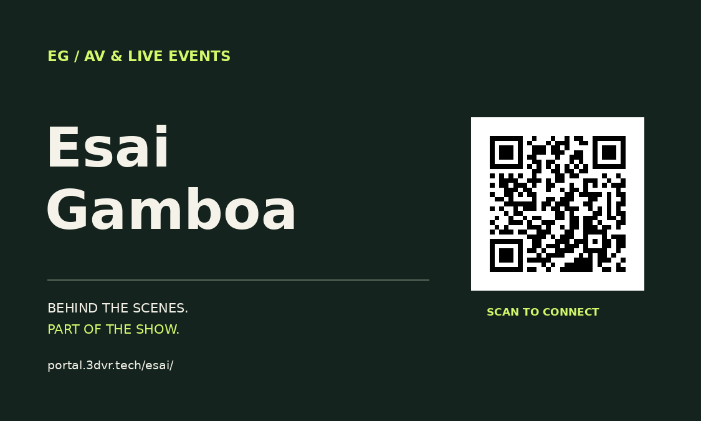
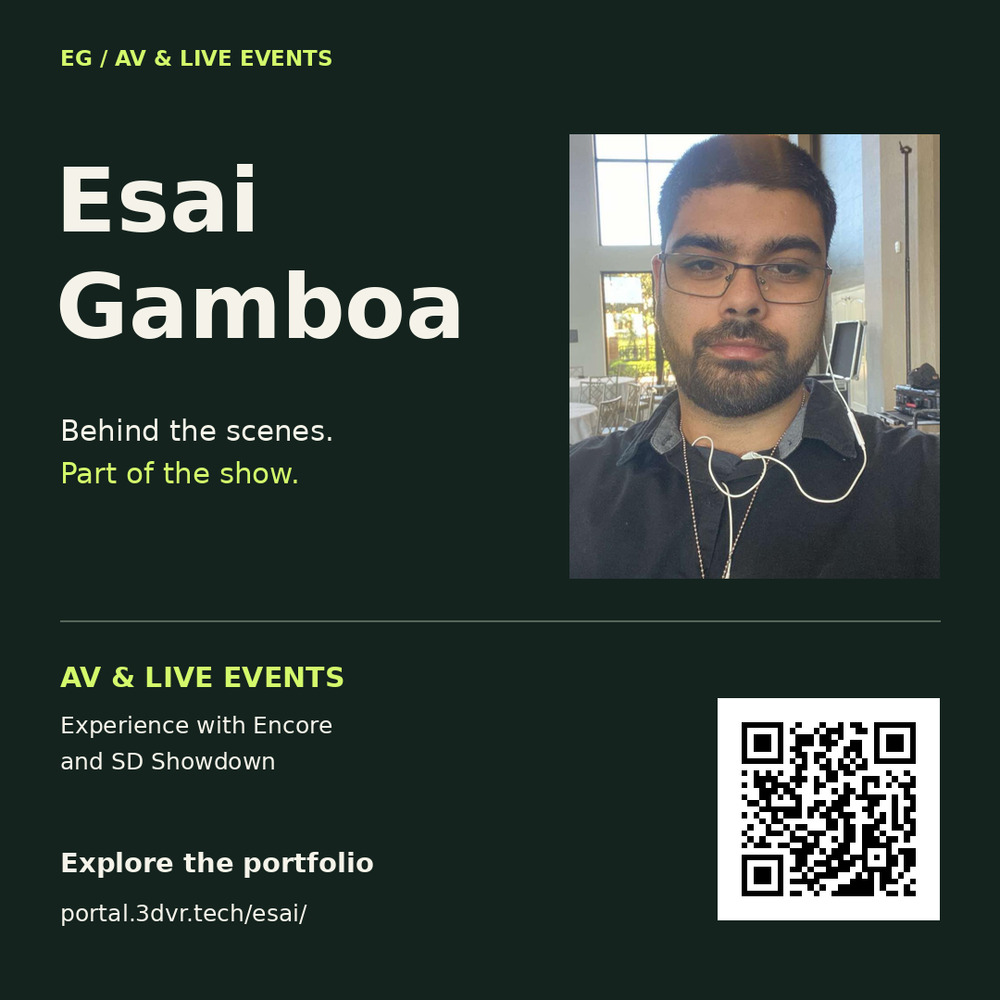
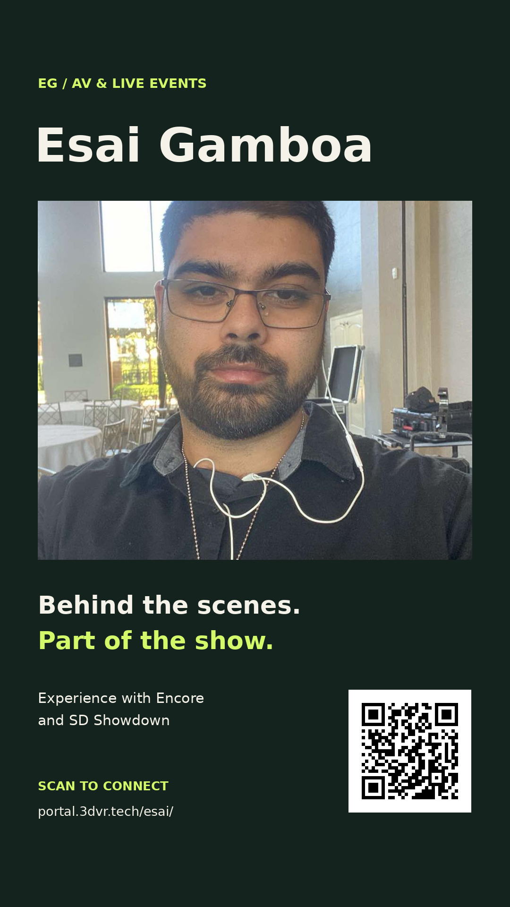
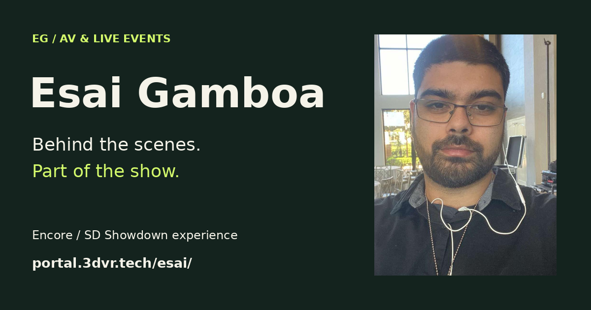
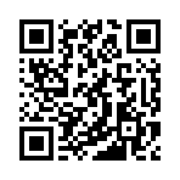

Business card
Two-sided PDF, plus front and back PNGs. Finished size: 3.5 × 2 inches. Includes 0.125-inch bleed on every edge.

Download print PDF ↓SAVE IT. SEND IT. PUT IT IN THEIR HANDS.
Matching business cards, social graphics, and a QR code. Every graphic points to Esai's portfolio, so one link connects the whole set.
Download the full kit ↓Two-sided PDF, plus front and back PNGs. Finished size: 3.5 × 2 inches. Includes 0.125-inch bleed on every edge.

Download print PDF ↓1080 × 1080 PNG · Instagram, Facebook, or a message to your next connection.

Download square ↓1080 × 1920 PNG · Instagram Stories, Facebook Stories, or WhatsApp Status.

Download story ↓1200 × 630 PNG · A landscape graphic and the portfolio's link preview image.

Download landscape ↓High-contrast PNG and scalable SVG. Keep the white border clear when placing it on other artwork.

Download QR PNG ↓Download scalable SVG ↓Portfolio
Media kit
Download suggested caption ↓Review the name, photo, and booking route with Esai. The card uses the working portal URL. Direct contact details and a custom subdomain can be added later. Print at 100% scale; ask the printer to trim 0.125 inch from each edge and confirm two-sided orientation. QR codes should remain at least 0.8 inch wide.
The portrait is reused from Esai's existing 3dvr.tech team profile. No unverified Facebook photos, social handles, or union membership are included.